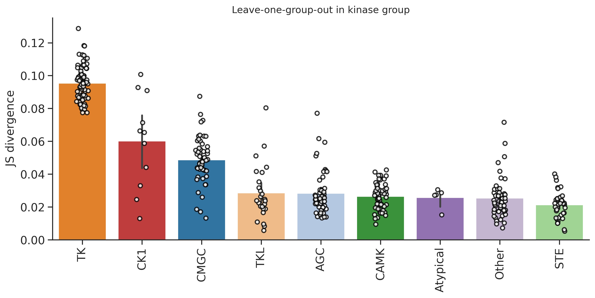
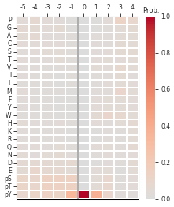
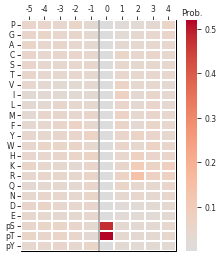

import numpy as np, pandas as pd
import os, random
from katlas.data import *
from katlas.train import *
from fastai.vision.all import *
from katlas.dnn import *DL training
Setup
seed_everything()def_device'cuda'Data
df=pd.read_parquet('train/pspa_t5.parquet')info=Data.get_kinase_info()
info = info[info.pseudo=='0']
info = info[info.kd_ID.notna()]
subfamily_map = info[['kd_ID','subfamily']].drop_duplicates().set_index('kd_ID')['subfamily']
family_map = info[['kd_ID','family']].drop_duplicates().set_index('kd_ID')['family']
group_map = info[['kd_ID','group']].drop_duplicates().set_index('kd_ID')['group']
pspa_info = pd.DataFrame(df.index.tolist(),columns=['kinase'])
pspa_info['subfamily'] = pspa_info.kinase.map(subfamily_map)
pspa_info['family'] = pspa_info.kinase.map(family_map)
pspa_info['group'] = pspa_info.kinase.map(group_map)df=df.reset_index()df.columnsIndex(['index', '-5P', '-4P', '-3P', '-2P', '-1P', '0P', '1P', '2P', '3P',
...
'T5_1014', 'T5_1015', 'T5_1016', 'T5_1017', 'T5_1018', 'T5_1019',
'T5_1020', 'T5_1021', 'T5_1022', 'T5_1023'],
dtype='object', length=1255)# column name of feature and target
feat_col = df.columns[df.columns.str.startswith('T5_')]
target_col = df.columns[~df.columns.isin(feat_col)][1:]feat_colIndex(['T5_0', 'T5_1', 'T5_2', 'T5_3', 'T5_4', 'T5_5', 'T5_6', 'T5_7', 'T5_8',
'T5_9',
...
'T5_1014', 'T5_1015', 'T5_1016', 'T5_1017', 'T5_1018', 'T5_1019',
'T5_1020', 'T5_1021', 'T5_1022', 'T5_1023'],
dtype='object', length=1024)Split
pspa_info| kinase | subfamily | family | group | |
|---|---|---|---|---|
| 0 | Q2M2I8_AAK1_HUMAN_KD1 | NAK | NAK | Other |
| 1 | P27037_AVR2A_HUMAN_KD1 | STKR2 | STKR | TKL |
| 2 | Q13705_AVR2B_HUMAN_KD1 | STKR2 | STKR | TKL |
| 3 | P31749_AKT1_HUMAN_KD1 | Akt | Akt | AGC |
| 4 | P31751_AKT2_HUMAN_KD1 | Akt | Akt | AGC |
| ... | ... | ... | ... | ... |
| 363 | P17948_VGFR1_HUMAN_KD1 | VEGFR | VEGFR | TK |
| 364 | P35968_VGFR2_HUMAN_KD1 | VEGFR | VEGFR | TK |
| 365 | P35916_VGFR3_HUMAN_KD1 | VEGFR | VEGFR | TK |
| 366 | P07947_YES_HUMAN_KD1 | Src | Src | TK |
| 367 | P43403_ZAP70_HUMAN_KD1 | Syk | Syk | TK |
368 rows × 4 columns
pspa_info.subfamily.value_counts()subfamily
Eph 12
Src 11
NEK 10
CK1 7
STE11 7
..
ZAK 1
Sev 1
Ret 1
Musk 1
Tie 1
Name: count, Length: 149, dtype: int64pspa_info.family.value_counts()family
STE20 27
CAMKL 20
CDK 17
MAPK 12
Eph 12
..
STK33 1
Sev 1
Ret 1
Musk 1
Tie 1
Name: count, Length: 92, dtype: int64pspa_info.group.value_counts()group
TK 78
CAMK 57
CMGC 52
AGC 52
Other 49
STE 39
TKL 25
CK1 11
Atypical 5
Name: count, dtype: int64splits = get_splits(pspa_info, group='group',nfold=9)
split0 = splits[0]GroupKFold(n_splits=9, random_state=None, shuffle=False)
# group in train set: 8
# group in test set: 1# splits = get_splits(pspa_info, stratified='subfamily',nfold=5)
# split0 = splits[0]Dataset
# dataset
ds = GeneralDataset(df,feat_col,target_col)len(ds)368dl = DataLoader(ds, batch_size=64, shuffle=True)xb,yb = next(iter(dl))
xb.shape,yb.shape(torch.Size([64, 1024]), torch.Size([64, 23, 10]))Model
n_feature = len(feat_col)
n_target = len(target_col)# def get_mlp(): return PSSM_model(n_feature,n_target,model='MLP')
def get_cnn(): return PSSM_model(n_feature,n_target,model='CNN')model = get_cnn()logits= model(xb)logits.shapetorch.Size([64, 23, 10])Loss
CE(logits,yb)tensor(3.3157, grad_fn=<MeanBackward0>)Metrics
KLD(logits,yb)tensor(0.5744, grad_fn=<MeanBackward0>)JSD(logits,yb)tensor(0.1175, grad_fn=<MeanBackward0>)CV train
cross-validation
oof = train_dl_cv(df,feat_col,target_col,
splits = splits,
model_func = get_cnn,
n_epoch=20,lr=3e-3)------fold0------
lr in training is 0.003| epoch | train_loss | valid_loss | KLD | JSD | time |
|---|---|---|---|---|---|
| 0 | 3.268444 | 3.142246 | 0.403685 | 0.081316 | 00:01 |
| 1 | 3.223688 | 3.149258 | 0.410697 | 0.083241 | 00:00 |
| 2 | 3.188168 | 3.216283 | 0.477722 | 0.098031 | 00:00 |
| 3 | 3.167378 | 3.243132 | 0.504571 | 0.099265 | 00:00 |
| 4 | 3.144057 | 3.275403 | 0.536842 | 0.095989 | 00:00 |
| 5 | 3.114893 | 3.410244 | 0.671683 | 0.100262 | 00:00 |
| 6 | 3.074008 | 3.487147 | 0.748586 | 0.101024 | 00:00 |
| 7 | 3.031979 | 3.477169 | 0.738607 | 0.096292 | 00:00 |
| 8 | 2.993206 | 3.545956 | 0.807395 | 0.096798 | 00:00 |
| 9 | 2.960338 | 3.564420 | 0.825859 | 0.094984 | 00:00 |
| 10 | 2.932564 | 3.585898 | 0.847337 | 0.094453 | 00:00 |
| 11 | 2.909952 | 3.612542 | 0.873981 | 0.096143 | 00:00 |
| 12 | 2.890255 | 3.622220 | 0.883659 | 0.095374 | 00:00 |
| 13 | 2.874159 | 3.617436 | 0.878875 | 0.095579 | 00:00 |
| 14 | 2.860142 | 3.616500 | 0.877939 | 0.095711 | 00:01 |
| 15 | 2.848442 | 3.617871 | 0.879310 | 0.095486 | 00:00 |
| 16 | 2.838370 | 3.622617 | 0.884056 | 0.095570 | 00:00 |
| 17 | 2.829890 | 3.622357 | 0.883796 | 0.095350 | 00:00 |
| 18 | 2.822687 | 3.626527 | 0.887966 | 0.095275 | 00:00 |
| 19 | 2.816834 | 3.623646 | 0.885085 | 0.095352 | 00:00 |
------fold1------
lr in training is 0.003| epoch | train_loss | valid_loss | KLD | JSD | time |
|---|---|---|---|---|---|
| 0 | 3.212596 | 3.125234 | 0.365841 | 0.080777 | 00:00 |
| 1 | 3.099743 | 2.987252 | 0.227859 | 0.057471 | 00:00 |
| 2 | 3.028379 | 2.910491 | 0.151098 | 0.035196 | 00:00 |
| 3 | 2.983666 | 2.890877 | 0.131483 | 0.031097 | 00:00 |
| 4 | 2.958514 | 2.905223 | 0.145831 | 0.034603 | 00:00 |
| 5 | 2.937688 | 2.907677 | 0.148284 | 0.035187 | 00:00 |
| 6 | 2.917891 | 2.881277 | 0.121884 | 0.028526 | 00:00 |
| 7 | 2.902501 | 2.873248 | 0.113856 | 0.026346 | 00:00 |
| 8 | 2.889619 | 2.872829 | 0.113436 | 0.026833 | 00:00 |
| 9 | 2.876809 | 2.887587 | 0.128195 | 0.030063 | 00:00 |
| 10 | 2.864545 | 2.876351 | 0.116958 | 0.027579 | 00:00 |
| 11 | 2.853440 | 2.868660 | 0.109267 | 0.025676 | 00:00 |
| 12 | 2.843314 | 2.880710 | 0.121317 | 0.028153 | 00:00 |
| 13 | 2.834223 | 2.873822 | 0.114429 | 0.026902 | 00:00 |
| 14 | 2.826858 | 2.876552 | 0.117159 | 0.027326 | 00:00 |
| 15 | 2.819620 | 2.867702 | 0.108309 | 0.025385 | 00:00 |
| 16 | 2.813650 | 2.872151 | 0.112758 | 0.026409 | 00:00 |
| 17 | 2.808244 | 2.871076 | 0.111683 | 0.026245 | 00:00 |
| 18 | 2.803885 | 2.870401 | 0.111008 | 0.026100 | 00:00 |
| 19 | 2.800537 | 2.871882 | 0.112490 | 0.026380 | 00:00 |
------fold2------
lr in training is 0.003| epoch | train_loss | valid_loss | KLD | JSD | time |
|---|---|---|---|---|---|
| 0 | 3.201890 | 3.129725 | 0.413121 | 0.088565 | 00:00 |
| 1 | 3.096505 | 2.986097 | 0.269494 | 0.064398 | 00:00 |
| 2 | 3.024636 | 2.871009 | 0.154406 | 0.034690 | 00:00 |
| 3 | 2.983121 | 2.886567 | 0.169964 | 0.038075 | 00:00 |
| 4 | 2.959250 | 2.890949 | 0.174346 | 0.038998 | 00:00 |
| 5 | 2.941066 | 2.876140 | 0.159536 | 0.036203 | 00:00 |
| 6 | 2.921443 | 2.835120 | 0.118516 | 0.027477 | 00:00 |
| 7 | 2.902086 | 2.833801 | 0.117198 | 0.027021 | 00:00 |
| 8 | 2.886297 | 2.849355 | 0.132751 | 0.031030 | 00:00 |
| 9 | 2.872198 | 2.838046 | 0.121443 | 0.028281 | 00:00 |
| 10 | 2.860072 | 2.847528 | 0.130924 | 0.031014 | 00:00 |
| 11 | 2.850605 | 2.845320 | 0.128717 | 0.030069 | 00:00 |
| 12 | 2.842837 | 2.838033 | 0.121429 | 0.028131 | 00:00 |
| 13 | 2.835088 | 2.843687 | 0.127084 | 0.029244 | 00:00 |
| 14 | 2.829087 | 2.841770 | 0.125167 | 0.029113 | 00:00 |
| 15 | 2.822559 | 2.840900 | 0.124297 | 0.029074 | 00:00 |
| 16 | 2.816937 | 2.840667 | 0.124064 | 0.029030 | 00:00 |
| 17 | 2.811662 | 2.838004 | 0.121400 | 0.028417 | 00:00 |
| 18 | 2.807413 | 2.836985 | 0.120382 | 0.028150 | 00:00 |
| 19 | 2.803787 | 2.837509 | 0.120905 | 0.028268 | 00:00 |
------fold3------
lr in training is 0.003| epoch | train_loss | valid_loss | KLD | JSD | time |
|---|---|---|---|---|---|
| 0 | 3.210961 | 3.139824 | 0.448681 | 0.093272 | 00:00 |
| 1 | 3.106327 | 3.012952 | 0.321808 | 0.073645 | 00:00 |
| 2 | 3.030328 | 2.910798 | 0.219654 | 0.045596 | 00:00 |
| 3 | 2.987636 | 2.923931 | 0.232787 | 0.046931 | 00:00 |
| 4 | 2.964270 | 2.944966 | 0.253822 | 0.050667 | 00:00 |
| 5 | 2.948700 | 2.925189 | 0.234045 | 0.046503 | 00:00 |
| 6 | 2.931691 | 2.939810 | 0.248666 | 0.045506 | 00:00 |
| 7 | 2.914931 | 2.940639 | 0.249495 | 0.047098 | 00:00 |
| 8 | 2.898672 | 2.933232 | 0.242088 | 0.047175 | 00:00 |
| 9 | 2.884794 | 2.956458 | 0.265314 | 0.049401 | 00:00 |
| 10 | 2.873357 | 2.937093 | 0.245949 | 0.047321 | 00:00 |
| 11 | 2.864048 | 2.967550 | 0.276406 | 0.049386 | 00:00 |
| 12 | 2.854204 | 2.945172 | 0.254028 | 0.048836 | 00:00 |
| 13 | 2.846267 | 2.950329 | 0.259185 | 0.049274 | 00:00 |
| 14 | 2.838986 | 2.957939 | 0.266794 | 0.050690 | 00:00 |
| 15 | 2.832119 | 2.959244 | 0.268100 | 0.049089 | 00:00 |
| 16 | 2.826439 | 2.956668 | 0.265524 | 0.048914 | 00:00 |
| 17 | 2.820872 | 2.951378 | 0.260234 | 0.048225 | 00:00 |
| 18 | 2.816314 | 2.952684 | 0.261540 | 0.048616 | 00:01 |
| 19 | 2.812371 | 2.952523 | 0.261379 | 0.048664 | 00:00 |
------fold4------
lr in training is 0.003| epoch | train_loss | valid_loss | KLD | JSD | time |
|---|---|---|---|---|---|
| 0 | 3.196200 | 3.119887 | 0.330442 | 0.073580 | 00:00 |
| 1 | 3.087657 | 2.964468 | 0.175023 | 0.045915 | 00:00 |
| 2 | 3.015391 | 2.924397 | 0.134952 | 0.031747 | 00:00 |
| 3 | 2.975794 | 2.941341 | 0.151896 | 0.036996 | 00:00 |
| 4 | 2.952074 | 2.949593 | 0.160148 | 0.036979 | 00:00 |
| 5 | 2.932781 | 2.909102 | 0.119657 | 0.027549 | 00:00 |
| 6 | 2.918698 | 2.904258 | 0.114813 | 0.026776 | 00:00 |
| 7 | 2.902740 | 2.904986 | 0.115541 | 0.026143 | 00:00 |
| 8 | 2.886056 | 2.899910 | 0.110465 | 0.025574 | 00:00 |
| 9 | 2.870191 | 2.908465 | 0.119020 | 0.027412 | 00:00 |
| 10 | 2.856241 | 2.904696 | 0.115252 | 0.026830 | 00:00 |
| 11 | 2.845051 | 2.905385 | 0.115940 | 0.026468 | 00:00 |
| 12 | 2.834966 | 2.903790 | 0.114345 | 0.026358 | 00:00 |
| 13 | 2.826263 | 2.904772 | 0.115327 | 0.026594 | 00:00 |
| 14 | 2.818301 | 2.901125 | 0.111680 | 0.025712 | 00:00 |
| 15 | 2.811762 | 2.899495 | 0.110050 | 0.025403 | 00:00 |
| 16 | 2.805649 | 2.899868 | 0.110423 | 0.025430 | 00:00 |
| 17 | 2.800948 | 2.899720 | 0.110275 | 0.025377 | 00:00 |
| 18 | 2.796926 | 2.900226 | 0.110781 | 0.025493 | 00:00 |
| 19 | 2.793103 | 2.899588 | 0.110144 | 0.025368 | 00:00 |
------fold5------
lr in training is 0.003| epoch | train_loss | valid_loss | KLD | JSD | time |
|---|---|---|---|---|---|
| 0 | 3.202535 | 3.133806 | 0.344995 | 0.074940 | 00:00 |
| 1 | 3.082218 | 2.982566 | 0.193756 | 0.050027 | 00:00 |
| 2 | 3.006975 | 2.907805 | 0.118994 | 0.029505 | 00:00 |
| 3 | 2.968001 | 2.898707 | 0.109897 | 0.026889 | 00:00 |
| 4 | 2.942980 | 2.903838 | 0.115027 | 0.028515 | 00:00 |
| 5 | 2.928590 | 2.907330 | 0.118519 | 0.029355 | 00:00 |
| 6 | 2.912098 | 2.913329 | 0.124519 | 0.030202 | 00:00 |
| 7 | 2.894329 | 2.910470 | 0.121659 | 0.028849 | 00:00 |
| 8 | 2.877685 | 2.888602 | 0.099792 | 0.024228 | 00:00 |
| 9 | 2.862452 | 2.881307 | 0.092496 | 0.022344 | 00:00 |
| 10 | 2.849864 | 2.873169 | 0.084359 | 0.020504 | 00:00 |
| 11 | 2.838987 | 2.878271 | 0.089461 | 0.021616 | 00:00 |
| 12 | 2.829584 | 2.875114 | 0.086303 | 0.020989 | 00:00 |
| 13 | 2.820966 | 2.880561 | 0.091751 | 0.022354 | 00:00 |
| 14 | 2.813811 | 2.875250 | 0.086439 | 0.020849 | 00:00 |
| 15 | 2.807681 | 2.878190 | 0.089379 | 0.021790 | 00:00 |
| 16 | 2.802142 | 2.877574 | 0.088764 | 0.021583 | 00:00 |
| 17 | 2.797960 | 2.876370 | 0.087560 | 0.021280 | 00:00 |
| 18 | 2.794275 | 2.876765 | 0.087954 | 0.021384 | 00:00 |
| 19 | 2.790958 | 2.876209 | 0.087399 | 0.021233 | 00:00 |
------fold6------
lr in training is 0.003| epoch | train_loss | valid_loss | KLD | JSD | time |
|---|---|---|---|---|---|
| 0 | 3.192896 | 3.114355 | 0.299088 | 0.068949 | 00:00 |
| 1 | 3.072716 | 2.940627 | 0.125361 | 0.032834 | 00:00 |
| 2 | 3.002883 | 2.957772 | 0.142506 | 0.032054 | 00:00 |
| 3 | 2.965346 | 2.990824 | 0.175558 | 0.039582 | 00:00 |
| 4 | 2.947776 | 2.941978 | 0.126711 | 0.029788 | 00:00 |
| 5 | 2.927652 | 2.913775 | 0.098509 | 0.023201 | 00:00 |
| 6 | 2.908386 | 2.931125 | 0.115859 | 0.028092 | 00:00 |
| 7 | 2.889489 | 3.015131 | 0.199864 | 0.040331 | 00:00 |
| 8 | 2.872598 | 3.108600 | 0.293334 | 0.047089 | 00:00 |
| 9 | 2.857689 | 3.067801 | 0.252534 | 0.044772 | 00:00 |
| 10 | 2.845634 | 3.061405 | 0.246138 | 0.043747 | 00:00 |
| 11 | 2.835376 | 3.082841 | 0.267574 | 0.044882 | 00:00 |
| 12 | 2.825951 | 2.936608 | 0.121341 | 0.028027 | 00:00 |
| 13 | 2.818342 | 2.935190 | 0.119923 | 0.027883 | 00:00 |
| 14 | 2.811705 | 2.943044 | 0.127777 | 0.029165 | 00:00 |
| 15 | 2.805591 | 2.937974 | 0.122708 | 0.028013 | 00:00 |
| 16 | 2.800382 | 2.936063 | 0.120797 | 0.027897 | 00:01 |
| 17 | 2.796225 | 2.939063 | 0.123796 | 0.028280 | 00:00 |
| 18 | 2.792200 | 2.939849 | 0.124582 | 0.028495 | 00:00 |
| 19 | 2.788862 | 2.939907 | 0.124640 | 0.028485 | 00:00 |
------fold7------
lr in training is 0.003| epoch | train_loss | valid_loss | KLD | JSD | time |
|---|---|---|---|---|---|
| 0 | 3.194380 | 3.124522 | 0.462477 | 0.099525 | 00:00 |
| 1 | 3.080183 | 2.939694 | 0.277649 | 0.062830 | 00:00 |
| 2 | 3.008529 | 2.995437 | 0.333392 | 0.067260 | 00:00 |
| 3 | 2.966992 | 3.179870 | 0.517824 | 0.101037 | 00:00 |
| 4 | 2.943557 | 3.033656 | 0.371611 | 0.072248 | 00:00 |
| 5 | 2.922162 | 2.979683 | 0.317637 | 0.068355 | 00:00 |
| 6 | 2.901323 | 2.962018 | 0.299973 | 0.067776 | 00:00 |
| 7 | 2.883021 | 2.956265 | 0.294219 | 0.069029 | 00:00 |
| 8 | 2.867451 | 2.959171 | 0.297125 | 0.067800 | 00:00 |
| 9 | 2.854755 | 2.945670 | 0.283625 | 0.063334 | 00:00 |
| 10 | 2.844199 | 2.912351 | 0.250306 | 0.058792 | 00:00 |
| 11 | 2.835510 | 2.958517 | 0.296471 | 0.064687 | 00:00 |
| 12 | 2.826829 | 2.944050 | 0.282005 | 0.063629 | 00:00 |
| 13 | 2.819519 | 2.921635 | 0.259589 | 0.057715 | 00:00 |
| 14 | 2.813123 | 2.928648 | 0.266603 | 0.059912 | 00:00 |
| 15 | 2.807595 | 2.921412 | 0.259367 | 0.057686 | 00:00 |
| 16 | 2.802780 | 2.918874 | 0.256829 | 0.057607 | 00:00 |
| 17 | 2.798306 | 2.927093 | 0.265047 | 0.059377 | 00:00 |
| 18 | 2.794925 | 2.926040 | 0.263994 | 0.059309 | 00:00 |
| 19 | 2.792395 | 2.929966 | 0.267921 | 0.060080 | 00:00 |
------fold8------
lr in training is 0.003| epoch | train_loss | valid_loss | KLD | JSD | time |
|---|---|---|---|---|---|
| 0 | 3.205244 | 3.132634 | 0.334502 | 0.072238 | 00:00 |
| 1 | 3.086741 | 2.955719 | 0.157587 | 0.037971 | 00:00 |
| 2 | 3.008643 | 2.943120 | 0.144988 | 0.031750 | 00:00 |
| 3 | 2.969967 | 2.987414 | 0.189282 | 0.040906 | 00:00 |
| 4 | 2.948977 | 2.929822 | 0.131690 | 0.028453 | 00:00 |
| 5 | 2.927054 | 2.913363 | 0.115232 | 0.025012 | 00:00 |
| 6 | 2.906929 | 2.917409 | 0.119277 | 0.025490 | 00:00 |
| 7 | 2.887527 | 2.905146 | 0.107015 | 0.022281 | 00:00 |
| 8 | 2.870863 | 2.904804 | 0.106672 | 0.022261 | 00:00 |
| 9 | 2.856507 | 2.907104 | 0.108972 | 0.022985 | 00:00 |
| 10 | 2.844364 | 2.902384 | 0.104252 | 0.021876 | 00:00 |
| 11 | 2.835686 | 2.907453 | 0.109321 | 0.023213 | 00:00 |
| 12 | 2.826668 | 2.934136 | 0.136004 | 0.030873 | 00:00 |
| 13 | 2.819024 | 2.919348 | 0.121216 | 0.026835 | 00:00 |
| 14 | 2.812526 | 2.914276 | 0.116144 | 0.025310 | 00:00 |
| 15 | 2.806530 | 2.911142 | 0.113010 | 0.024486 | 00:00 |
| 16 | 2.801201 | 2.910681 | 0.112549 | 0.024063 | 00:00 |
| 17 | 2.796801 | 2.911893 | 0.113761 | 0.024416 | 00:00 |
| 18 | 2.793387 | 2.926122 | 0.127990 | 0.028739 | 00:00 |
| 19 | 2.790715 | 2.915712 | 0.117579 | 0.025767 | 00:00 |
oof| -5P | -4P | -3P | -2P | -1P | 0P | 1P | 2P | 3P | 4P | ... | -4pY | -3pY | -2pY | -1pY | 0pY | 1pY | 2pY | 3pY | 4pY | nfold | |
|---|---|---|---|---|---|---|---|---|---|---|---|---|---|---|---|---|---|---|---|---|---|
| 0 | 0.047404 | 0.037780 | 0.046546 | 0.044617 | 0.051374 | 0.000030 | 0.017466 | 0.040908 | 0.049329 | 0.048131 | ... | 0.039294 | 0.043213 | 0.046592 | 0.054406 | 0.000007 | 0.046097 | 0.046917 | 0.047657 | 0.034369 | 4 |
| 1 | 0.037532 | 0.045341 | 0.036718 | 0.063372 | 0.041851 | 0.000013 | 0.063370 | 0.025355 | 0.043444 | 0.038740 | ... | 0.044952 | 0.052067 | 0.050859 | 0.034687 | 0.000006 | 0.031059 | 0.048092 | 0.029954 | 0.033546 | 6 |
| 2 | 0.035738 | 0.046827 | 0.036026 | 0.060344 | 0.043486 | 0.000012 | 0.063726 | 0.026826 | 0.046667 | 0.037928 | ... | 0.039262 | 0.045940 | 0.043723 | 0.029287 | 0.000005 | 0.028443 | 0.042542 | 0.027091 | 0.031485 | 6 |
| 3 | 0.047568 | 0.048670 | 0.038904 | 0.052459 | 0.046462 | 0.000046 | 0.093580 | 0.036871 | 0.048124 | 0.043455 | ... | 0.034359 | 0.029111 | 0.025172 | 0.045547 | 0.000052 | 0.046661 | 0.049495 | 0.048516 | 0.043920 | 2 |
| 4 | 0.049045 | 0.050830 | 0.037948 | 0.048573 | 0.048902 | 0.000038 | 0.079036 | 0.037306 | 0.045473 | 0.043417 | ... | 0.031548 | 0.026048 | 0.023077 | 0.043740 | 0.000018 | 0.046211 | 0.049728 | 0.047716 | 0.042058 | 2 |
| ... | ... | ... | ... | ... | ... | ... | ... | ... | ... | ... | ... | ... | ... | ... | ... | ... | ... | ... | ... | ... | ... |
| 363 | 0.042055 | 0.046076 | 0.038341 | 0.050882 | 0.030014 | 0.000300 | 0.018654 | 0.027171 | 0.033283 | 0.051083 | ... | 0.042263 | 0.052389 | 0.051906 | 0.054458 | 0.000377 | 0.027612 | 0.027426 | 0.034722 | 0.031342 | 0 |
| 364 | 0.042847 | 0.046771 | 0.039154 | 0.053156 | 0.032173 | 0.000260 | 0.022034 | 0.026839 | 0.036783 | 0.050359 | ... | 0.040027 | 0.051253 | 0.047015 | 0.052011 | 0.000327 | 0.026737 | 0.025064 | 0.033250 | 0.031438 | 0 |
| 365 | 0.047013 | 0.045912 | 0.042460 | 0.065080 | 0.036413 | 0.000344 | 0.034923 | 0.027760 | 0.040243 | 0.050786 | ... | 0.035882 | 0.045143 | 0.035541 | 0.047225 | 0.000414 | 0.021267 | 0.023076 | 0.027955 | 0.025657 | 0 |
| 366 | 0.045561 | 0.050462 | 0.050171 | 0.067506 | 0.022177 | 0.000440 | 0.022360 | 0.025587 | 0.037392 | 0.056982 | ... | 0.046249 | 0.049369 | 0.045894 | 0.056376 | 0.000457 | 0.028827 | 0.025201 | 0.032906 | 0.029250 | 0 |
| 367 | 0.049380 | 0.049734 | 0.042974 | 0.053333 | 0.024749 | 0.000324 | 0.014477 | 0.022930 | 0.031544 | 0.055064 | ... | 0.042814 | 0.049452 | 0.038829 | 0.055074 | 0.000401 | 0.027925 | 0.023198 | 0.026473 | 0.026530 | 0 |
368 rows × 231 columns
Score
from katlas.clustering import *
from functools import partialdef score_df(target,pred,func):
distance = [func(target.loc[i],pred.loc[i,target.columns]) for i in target.index]
return pd.Series(distance,index=target.index)jsd_df = partial(score_df,func=js_divergence_flat)
kld_df = partial(score_df,func=kl_divergence_flat)target=df[target_col].copy()pspa_info['group_split'] = oof.nfoldpspa_info['group_jsd'] =jsd_df(target,oof)from katlas.plot import *plot_bar<function katlas.plot.plot_bar(df, value, group, title=None, figsize=(12, 5), fontsize=14, dots=True, rotation=90, ascending=False, *, data=None, x=None, y=None, hue=None, order=None, hue_order=None, estimator='mean', errorbar=('ci', 95), n_boot=1000, seed=None, units=None, weights=None, orient=None, color=None, palette=None, saturation=0.75, fill=True, hue_norm=None, width=0.8, dodge='auto', gap=0, log_scale=None, native_scale=False, formatter=None, legend='auto', capsize=0, err_kws=None, ci=<deprecated>, errcolor=<deprecated>, errwidth=<deprecated>, ax=None)>len(pspa_info)368set_sns()plot_bar(pspa_info,'group_jsd',group='group',palette=group_color)
plt.ylabel('JS divergence')
plt.title('Leave-one-group-out in kinase group')Text(0.5, 1.0, 'Leave-one-group-out in kinase group')
pspa_info.sort_values('group_jsd')| kinase | subfamily | family | group | group_split | group_jsd | |
|---|---|---|---|---|---|---|
| 143 | Q13163_MP2K5_HUMAN_KD1 | STE7 | STE7 | STE | 5 | 0.005204 |
| 20 | Q13873_BMPR2_HUMAN_KD1 | STKR2 | STKR | TKL | 6 | 0.005647 |
| 144 | Q13233_M3K1_HUMAN_KD1 | STE11 | STE11 | STE | 5 | 0.006119 |
| 174 | Q8NG66_NEK11_HUMAN_KD1 | NEK | NEK | Other | 4 | 0.007180 |
| 10 | P57078_RIPK4_HUMAN_KD1 | RIPK | RIPK | TKL | 6 | 0.008301 |
| ... | ... | ... | ... | ... | ... | ... |
| 323 | P22455_FGFR4_HUMAN_KD1 | FGFR | FGFR | TK | 0 | 0.112695 |
| 317 | Q05397_FAK1_HUMAN_KD1 | FAK | FAK | TK | 0 | 0.113066 |
| 353 | P43405_KSYK_HUMAN_KD1 | Syk | Syk | TK | 0 | 0.118080 |
| 319 | P07332_FES_HUMAN_KD1 | Fer | Fer | TK | 0 | 0.118289 |
| 367 | P43403_ZAP70_HUMAN_KD1 | Syk | Syk | TK | 0 | 0.128761 |
368 rows × 6 columns
from katlas.pssm import *def plot_one_pssm(target,pred,idx):
target_pssm = recover_pssm(target.loc[idx])
pred_pssm = recover_pssm(pred.loc[idx,target.columns])
plot_heatmap(target_pssm)
plot_heatmap(pred_pssm)set_sns(50)plot_one_pssm(target,oof,367)
